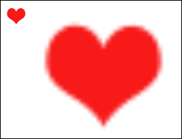
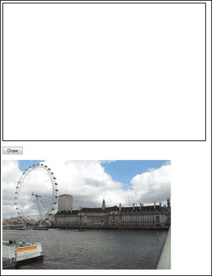
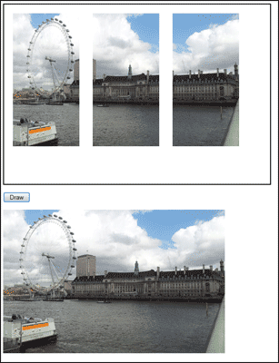
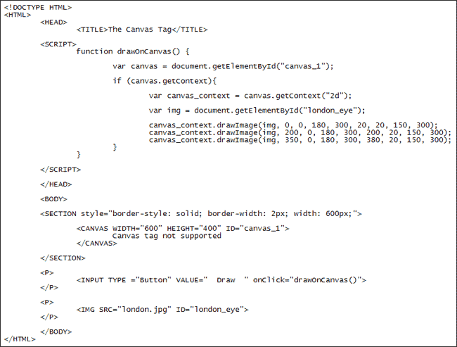

Drawing, Scaling, Slicing Images on a HTML5 Canvas
Ongoing HTML5 Canvas Tutorial: 1 2 3 4 5 6 7 8 9 10 11 12 13 14 15
One useful method available to you is drawImage. There are three ways to use this method. If all you want to do is to place an image on your canvas then you can use drawImage like this:
drawImage( image, x, y );
In between the round brackets of drawImage you need an image to use, then a pair of X and Y coordinates in order to position it on your canvas:
var heart = new Image();
heart.src = "heart.gif";
heart.onload = function() {
canvas_context.drawImage( heart, 10, 10 );
}
In the code above, we're placing the heart image 10 pixels from the left and 10 down from the top.
Image Scaling
The second way to use drawImage is for scaling images. It has an extra two arguments, width and height:
drawImage( image, x, y, width, height );
The first three arguments are the same. The other two are for how big you want your new version:
var heart = new Image();
heart.src = "heart.gif";
heart.onload = function() {
canvas_context.drawImage( heart, 10, 10, 200, 200 );
}
The code above increases the size of the image to 200 by 200.
In the image below, the smaller heart has been placed on the canvas with the first use of drawImage. The bigger heart uses the second drawImage method:

Image Slicing
The third way to use drawImage is used for slicing images. It's a little trickier to use:
drawImage( image, source_x, source_y, w, h, dest_x, dest_y, w, h );
The idea is that you select a starting position for your source image (source_x and source_y, above). This is the image you want to take a slice from. You also specify how big a slice you want to take (width and height). You then choose a place on your canvas that you want to place the slice (dest_x and dest_y, above). Finally, type a width and height for the new slice.
If all that is not too clear, take a look at the following: (Or you could try it by clicking here: Slice Image)

We have placed an image on a web page with HTML. When the button is clicked we want to take three slices from it and make a triptych. We want to create this effect:

The HTML for the image is just this:
<IMG SRC="london.jpg" ID="london_eye">
We can get a reference to it with Javascript by using getElementById:
var img = document.getElementById( "london_eye" );
To draw the first slice, we used this line of code:
canvas_context.drawImage( img, 0, 0, 180, 300, 20, 20, 150, 300 );
The first four sets of numbers mean, "Grab a slice of the source image starting at 0, 0. The slice should be 180 pixels by 300". To place the slice on the canvas, the next four numbers are used. They mean, "Place the new slice at 20 pixels from the left and 20 pixels down from the top. The new slice should be 150 by 300". Here's the whole code:

In the next section, we'll take another look at Javascript timers.